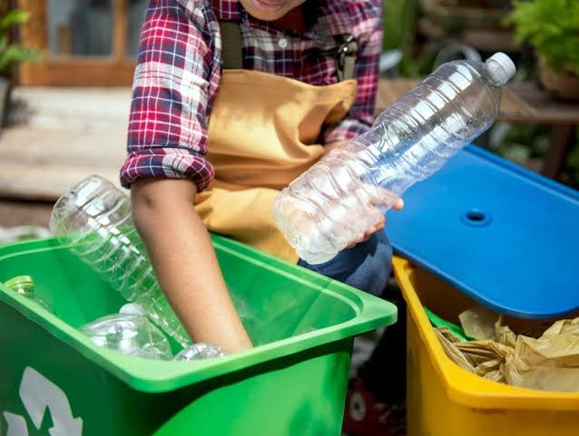
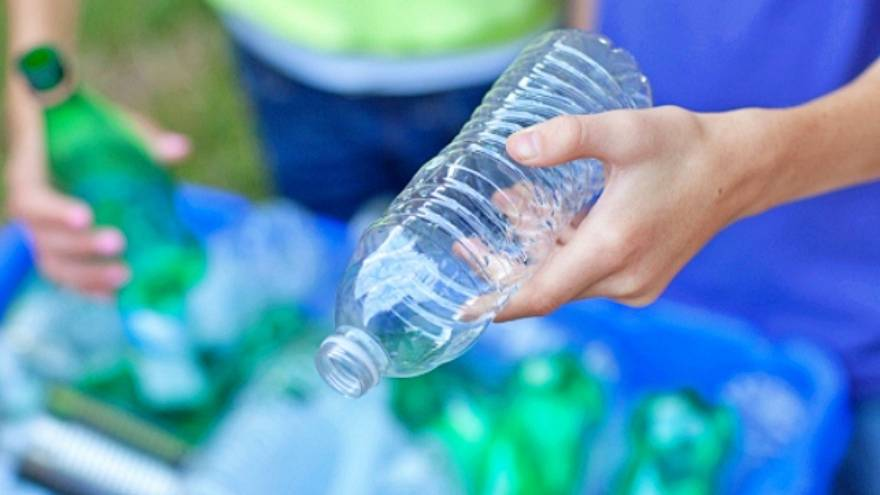
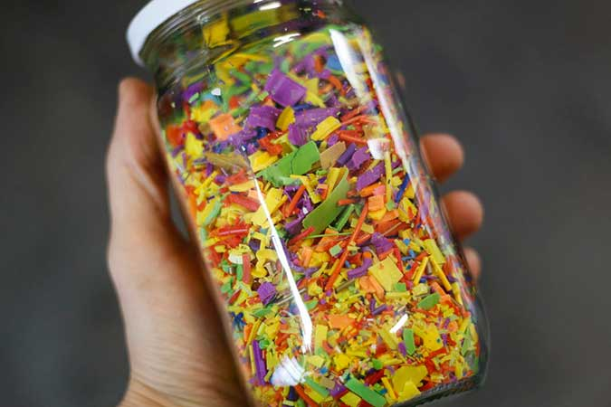
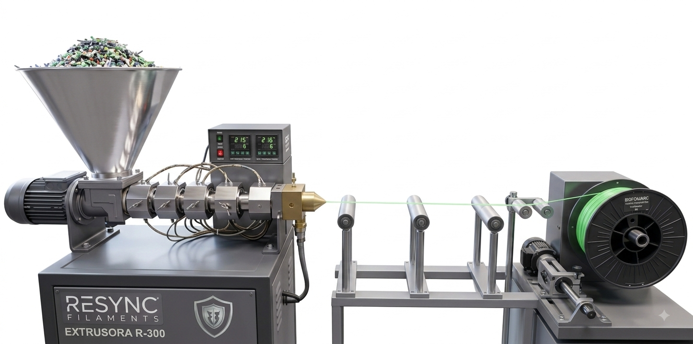

Recolección
Reunimos botellas PET en puntos de acopio y campañas comunitarias.
Somos BioForjaRC, una tienda que transforma el reciclaje de plástico en productos útiles y creativos gracias a la impresión 3D.
Recuperar botellas plásticas del medio ambiente y convertirlas en productos ecológicos, funcionales y de calidad mediante la impresión 3D.
Ser una empresa líder en economía circular en Chile, inspirando el consumo responsable a través del diseño y el reciclaje.

Reunimos botellas PET en puntos de acopio y campañas comunitarias.

Lavamos y clasificamos el material para garantizar su calidad.

Convertimos las botellas en pequeños fragmentos reutilizables.

Transformamos el plástico en filamento para nuestras impresoras 3D.
Contáctanos o solicita una cotización personalizada.
Ir a Contacto Solicitar cotización